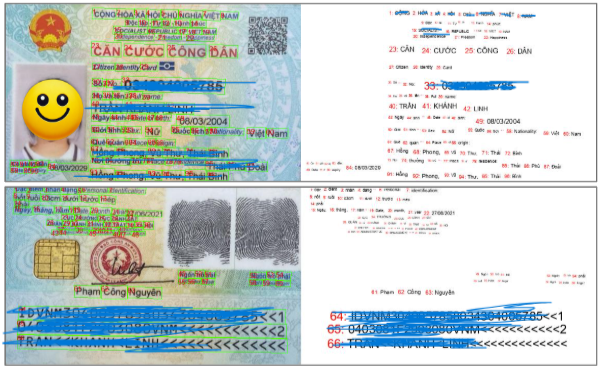

ID Card Detection & OCR Solution for Banking
Indochina Bank TriNam2024.05 - 2024.11
A high-performance ID card detection and OCR system for non-face-to-face identity verification in the financial sector. Successfully deployed to field systems through model lightweighting and optimization using ONNX/OpenVINO while ensuring ID recognition rates in various environments.

98.47%
ID Card Detection
(Segmentation)
98.82%
Text Recognition
(OCR)
97.89%
Text Detection
(OCR Area)
ID Card Object Localization
Character Region Finding
End-to-End Performance
System Accuracy